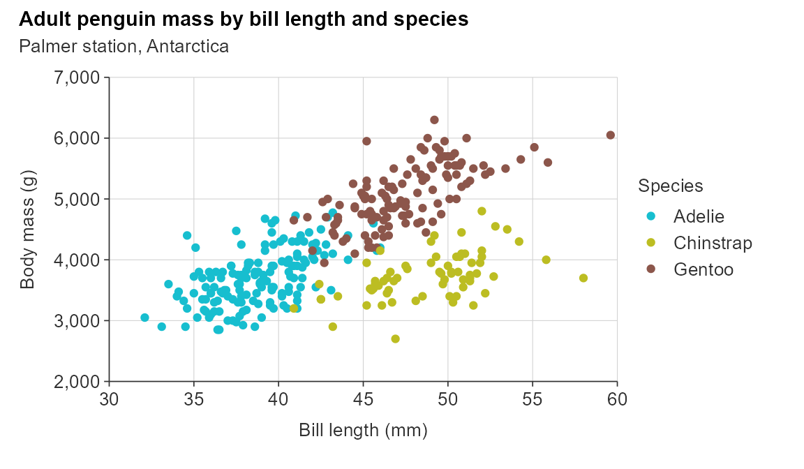
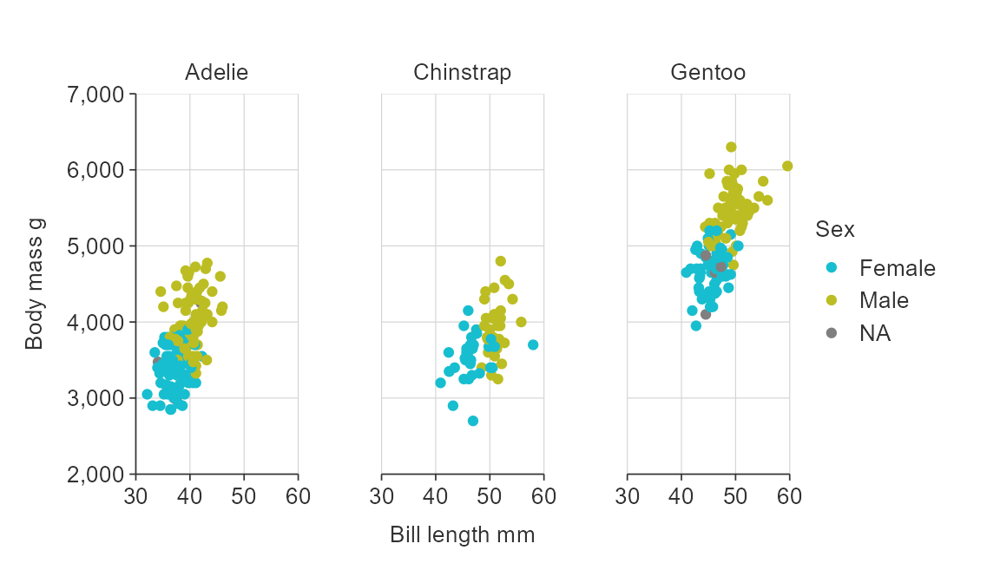
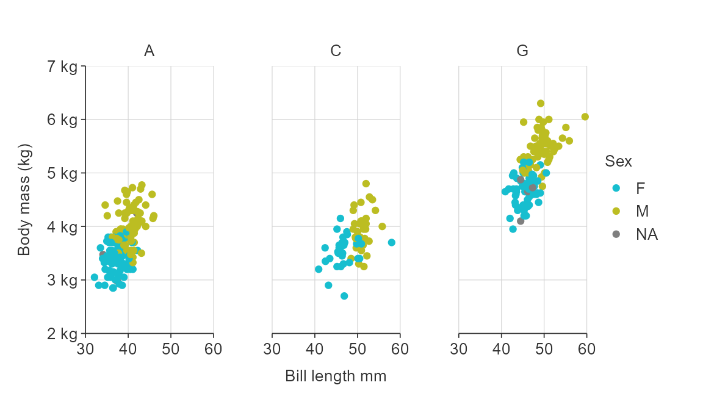
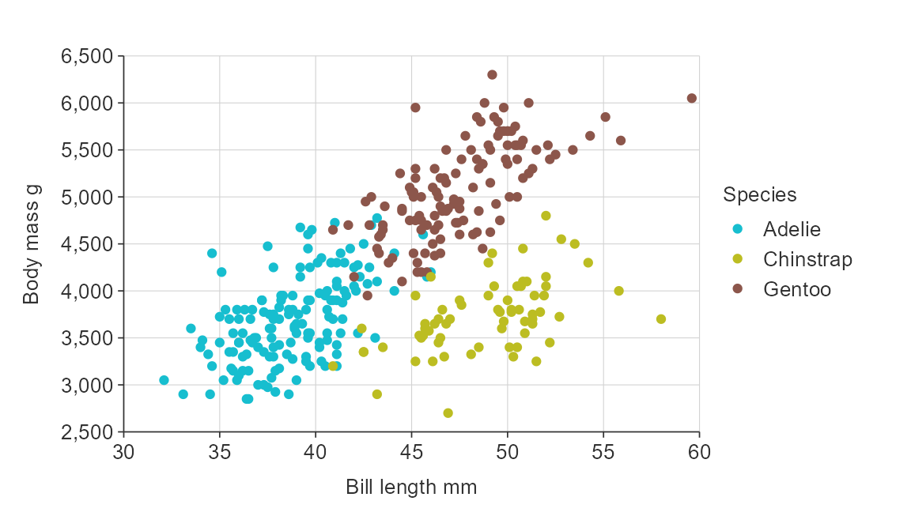
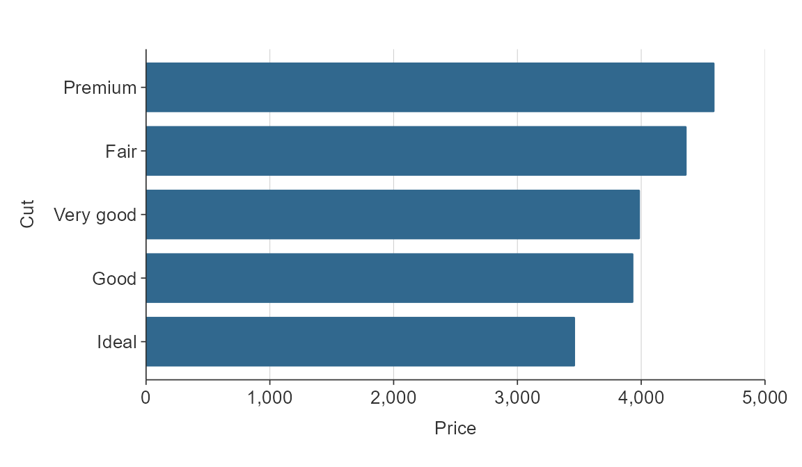
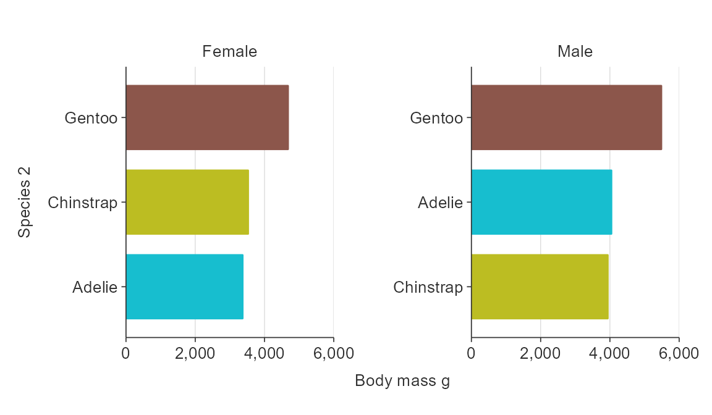
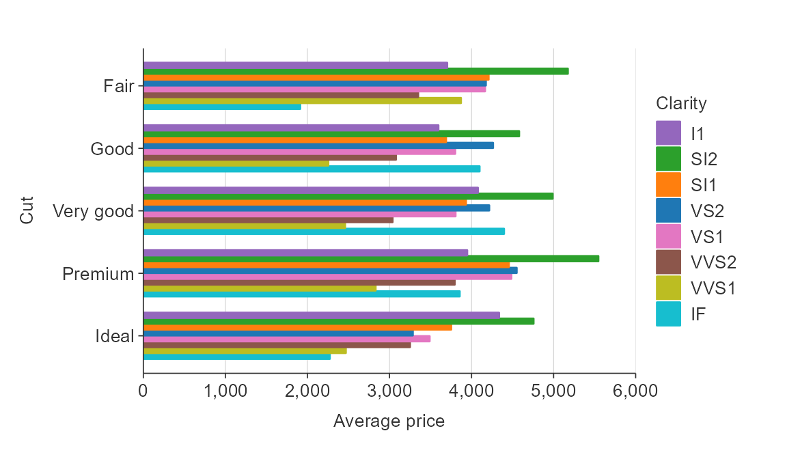
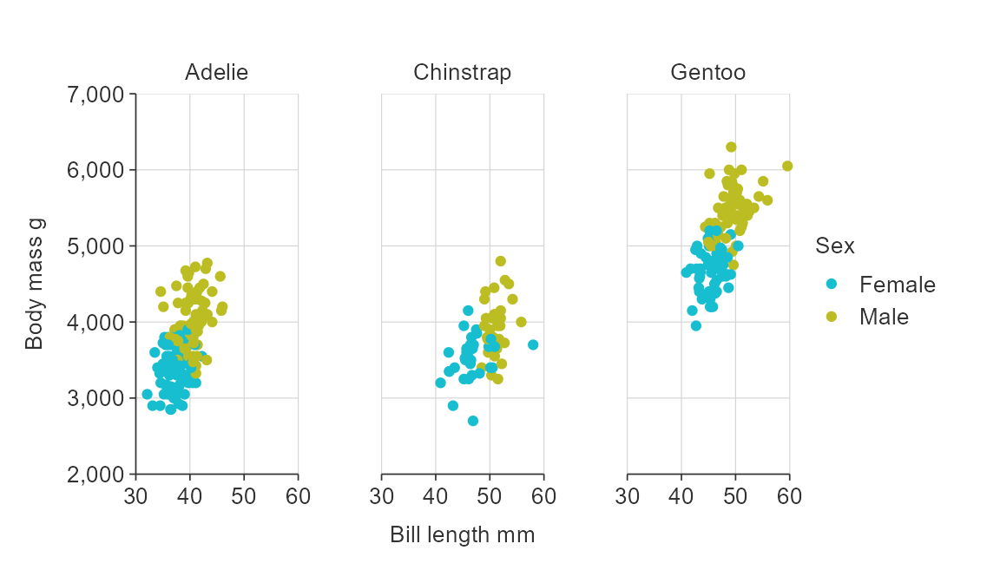
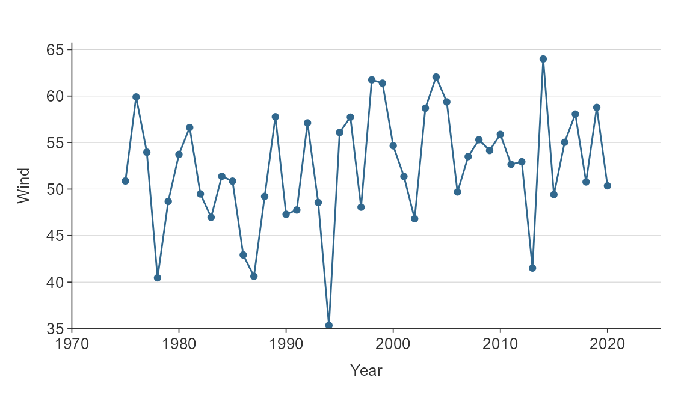
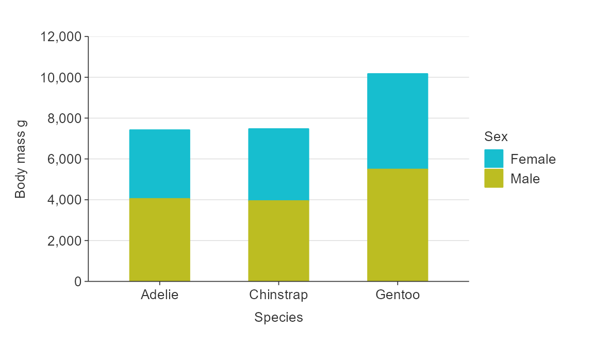

Overview
simplevis uses consistent prefixes in arguments to help users to enable users to narrow down what they are looking for and then enable the Rstudio auto-complete to provide options.
In general:
- Arguments that relate to the x scale start with
x_ - Agruments that relate to the y scale start with
y_ - Arguments that relate to the colour scale start with
col_ - Arguments that relate to facetting start with
facet_
Therefore, if you know want to adjust the x scale but can’t think how, you can start typing x_ within the simplevis function, press tab, and then you will be presented with a lot of options. You can use the arrow keys to scroll through these, and the tab to select.
One deviation from this logic is that colour palette is selected using a pal argument consistently in all functions regardless of whether the colour palette relates to a colour scale or just to everything.
Labels
You can adjust x, y or colour scale labels using x_labels, y_labels or col_labels arguments, and functions from the scales package.
gg_point_col(penguins, x_var = bill_length_mm, y_var = body_mass_g, col_var = species, y_labels = scales::comma_format(), x_labels = scales::number_format(accuracy = 0.1))

Or via a function.
gg_point_col(penguins, bill_length_mm, body_mass_g, species, x_labels = function(x) glue::glue("{x} mm"))

Note there is a default sentence case transformation for categorical x, y or col variables. But you can use ggplot2::waiver() to turn this off.
The facet_labels argument works slightly differently in that it provides access to the ggplot2 labeller argument within the ggplot facet_wrap function. Therefore you need to use ggplot labeller functions to modify them.
gg_point_col_facet(penguins, bill_length_mm, body_mass_g, sex, sex, col_labels = ggplot2::waiver(), facet_labels = ggplot2::label_value)

Numeric scales
simplevis graphs numeric scales default to:
- starting from zero for numeric scales on bar graphs.
- not starting from zero for numeric scales on all other graphs.
You can use the x_zero and y_zero arguments to change the defaults.
gg_point_col(penguins, x_var = bill_length_mm, y_var = body_mass_g, col_var = species, x_zero = TRUE, y_zero = TRUE)
Adjust the number of breaks for numeric x and/or y scales.
gg_point_col(penguins, x_var = bill_length_mm, y_var = body_mass_g, col_var = species, x_pretty_n = 6, y_pretty_n = 10)

Transform numeric x and y scales.
gg_point_col(penguins, x_var = bill_length_mm, y_var = body_mass_g, col_var = species, x_trans = "sqrt", x_zero = T, y_trans = "log10")

Balance a numeric scale so that it has equivalence between positive and negative values.
gg_point_col(penguins, x_var = bill_length_mm, y_var = body_mass_g, col_var = species, y_balance = T)

Zero lines default on if a numeric scale includes positive and negative values, but can be turned off if desired.
gg_point_col(penguins, x_var = bill_length_mm, y_var = body_mass_g, col_var = species, y_balance = T, y_zero_line = F)

Discrete scales
simplevis automatically orders hbar graphs of character variables alphabetically.
plot_data <- ggplot2::diamonds %>% mutate(cut = as.character(cut)) %>% group_by(cut) %>% summarise(price = mean(price)) gg_hbar(plot_data, x_var = price, y_var = cut)

If there is an inherent order to the character variable that you want it to plot in, then you should convert the variable to a factor, and give it the appropriate levels.
cut_levels <- c("Ideal", "Premium", "Very Good", "Good", "Fair") plot_data <- ggplot2::diamonds %>% mutate(cut = as.character(cut)) %>% mutate(cut = factor(cut, levels = cut_levels)) %>% group_by(cut) %>% summarise(price = mean(price)) gg_hbar(plot_data, x_var = price, y_var = cut)

Discrete scales can be reversed easily using the relevant y_rev or x_rev argument.
plot_data <- ggplot2::diamonds %>% mutate(cut = as.character(cut)) %>% group_by(cut) %>% summarise(price = mean(price)) gg_hbar(plot_data, x_var = price, y_var = cut, y_rev = TRUE)

Simple hbar and vbar plots made with gg_bar() or gg_hbar can be ordered by size using y_reorder or x_reorder. For other functions, you will need to reorder variables in the data as you wish them to be ordered.
plot_data <- ggplot2::diamonds %>% mutate(cut = as.character(cut)) %>% group_by(cut) %>% summarise(price = mean(price)) gg_hbar(plot_data, x_var = price, y_var = cut, y_reorder = T)

Colour scales
Customise the colour title. Note that because colour labels will be converted to sentence case by default in simplevis, but we can turn this off when we do not want this to occur using ggplot2::waiver()
plot_data <- ggplot2::diamonds %>% group_by(cut, clarity) %>% summarise(average_price = mean(price)) gg_hbar_col(plot_data, x_var = average_price, y_var = cut, col_var = clarity, col_labels = ggplot2::waiver(), pal_rev = TRUE)

Reverse the palette.
plot_data <- ggplot2::diamonds %>% group_by(cut, clarity) %>% summarise(average_price = mean(price)) gg_hbar_col(plot_data, x_var = average_price, y_var = cut, col_var = clarity, col_labels = ggplot2::waiver(), pal_rev = TRUE)

Reverse the order of coloured bars.
NA values
You can quickly remove NA values by setting x_na, y_na, col_na or facet_na arguments to FALSE.
gg_point_col_facet(penguins, x_var = bill_length_mm, y_var = body_mass_g, col_var = sex, facet_var = species, col_na = F)

Adding minor gridlines
You can also add applicable minor gridlines to the plot quickly using the *_gridlines_minor arguments.
gg_point_col(penguins, x_var = bill_length_mm, y_var = body_mass_g, col_var = species, y_gridlines_minor = T)

Expanding the scale
To expand the scale use x_expand and y_expand arguments with the ggplot2::expansion function, which allows to expand in either or both directions of both x and y in an additive or multiplative way.
plot_data <- storms %>% group_by(year) %>% summarise(wind = mean(wind)) gg_line(plot_data, x_var = year, y_var = wind, x_expand = ggplot2::expansion(add = c(0, 5)), y_expand = ggplot2::expansion(mult = c(0, 0.025)))

Stacking bars
bar*() and hbar*() plots support a "stack" position as well as the default "dodge".
plot_data <- penguins %>% group_by(sex, species) %>% summarise(count = n()) gg_hbar_col(plot_data, x_var = count, y_var = species, col_var = sex, position = "stack")
